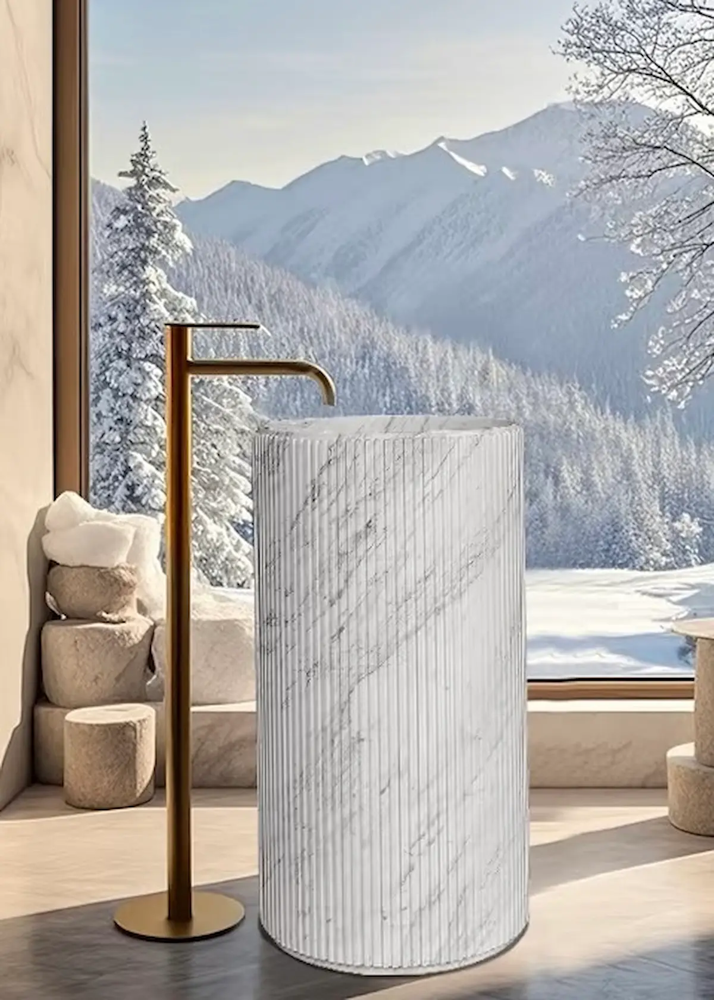

天然石材浴室台盆已经成为现代高端室内设计中的重要元素。凭借独特纹理、高级质感和长期耐用性，定制石材台盆越来越多地用于豪宅、酒店、别墅、展厅和商业项目。
但是，选择合适的石材台盆并不只是看外观。材料、台盆款式、表面工艺、排水设计、加工复杂度、维护要求以及供应商能力，都会影响最终效果。
这篇指南会从石材材料、台盆款式、生产流程到供应商选择，帮助你判断如何为项目选择合适的定制石材浴室台盆。

1. 为什么选择定制石材浴室台盆？
相比批量生产的陶瓷或不锈钢台盆，定制天然石材台盆具有更强的视觉价值和更高的设计灵活性。
独特的天然外观
每一块天然石材都有独特的颜色、纹理和质感。没有两个石材台盆会完全一样，因此每件产品都更具独特性和高级感。
可按项目定制尺寸和设计
定制石材台盆可以根据具体尺寸、图纸、室内风格或项目要求生产，非常适合高端浴室、酒店项目、别墅和设计师空间。
提升空间定位
石材台盆可以明显提升浴室质感。无论是大胆的绿色大理石立柱盆、简洁的定制大理石台上盆，还是一体式石材台盆，材料本身都会带来更强的品质感。
长期耐用
如果材料选择正确，并且经过合理加工、密封和维护，天然石材台盆可以长期使用。密度较高、加工和密封质量好的石材，尤其适合浴室环境。
2. 浴室台盆常用石材材料
材料选择是定制石材台盆项目中最关键的一步。浴室台盆会长期接触水汽、湿度、洗手液、化妆品和日常使用，因此材料既要美观，也要有合适的性能。
大理石台盆
大理石是高端浴室台盆中最受欢迎的材料之一。它纹理优雅、天然质感强，颜色选择也丰富，包括白色、米色、绿色、黑色、灰色以及纹理更丰富的品种。
优势：外观高级、天然纹理装饰性强、颜色选择丰富，适合台上盆、立柱盆和一体式浴室柜设计。
注意事项：大理石比花岗岩和石英岩更容易吸水，需要密封处理，并建议使用温和、非酸性的清洁产品。
适合：高端浴室、别墅、酒店、设计师空间和视觉焦点项目。
花岗岩台盆
花岗岩以硬度、密度和耐用性著称。对于需要更强表面性能和较低维护要求的项目，它是比较实用的选择。
优势：耐刮性强、防潮性好、适合高频使用，维护成本通常低于许多大理石。
注意事项：花岗岩视觉纹理可能更厚重，颜色和纹理选择通常没有大理石柔和。
适合：高频使用浴室、商业空间以及更重视耐用性的项目。
石英岩台盆
石英岩是一种密度较高、表面性能较强的天然石材。当客户希望兼顾天然石材外观和更好耐用性时，石英岩是不错的选择。
适合：同时重视外观和耐用性的高端住宅及商业浴室。
工程石英石台盆
工程石英石适合部分板材拼接类台盆设计，因为它吸水率低、清洁方便。但它的天然感不如真正的天然石材，也不太适合雕刻感强、造型复杂或高度定制的石材台盆。
洞石台盆
洞石色调温暖、质感自然，适合地中海、自然或质朴风格空间。但洞石孔隙率较高，用于浴室台盆时需要更好的密封处理和更规律的维护。

3. 常见定制石材浴室台盆款式
台盆款式会影响外观和使用功能。好的设计应该匹配浴室布局、使用习惯和石材特性。
台上盆
台上盆安装在台面上方，视觉冲击力强，是高端浴室和精品项目中常见的款式。可以参考我们的定制大理石台上盆产品。
立柱盆
石材立柱盆独立落地，常常成为浴室视觉焦点。它特别适合绿色大理石、黑色大理石以及纹理鲜明的天然石材。可参考白色竖纹大理石立柱盆和独立式圆柱大理石立柱盆。
一体式台盆
一体式台盆把台盆和台面做成连续的石材结构，视觉更干净、无缝、现代，适合极简室内、高端酒店、别墅和定制浴室柜项目。
台下盆
台下盆安装在台面下方，外观简洁，也更便于清洁，适合强调实用性的浴室布局。


4. 让石材颜色和纹理匹配浴室设计
石材的颜色和纹理应该与浴室整体设计协调，包括墙面、地面、浴室柜、镜子以及五金件。
对于现代极简浴室，白色、灰色、米色或浅奶油色等中性色石材，以及纹理较柔和的材料，通常更容易营造干净、安静的视觉效果。
对于高端室内设计，纹理明显、对比强烈的天然石材可以成为视觉焦点。绿色大理石、黑色大理石、Calacatta 风格大理石以及纹理丰富的材料，常用于需要突出设计感的台盆。
对于自然或温暖风格的空间，带有土色调和有机纹理的石材，可以让浴室更柔和、更放松。
在最终确认材料前，建议把石材和周边材料一起对比。单独看很漂亮的石材，放到瓷砖、木柜、黄铜五金或墙板旁边时，视觉效果可能会明显不同。
5. 维护和耐用性
天然石材台盆很耐用，但合理维护很重要。维护要求取决于材料本身，也取决于台盆设计。
- 定期做密封处理，尤其是大理石、石灰石和洞石。
- 使用温和、非酸性的清洁剂。
- 避免强酸、强碱和刺激性化学品。
- 使用后擦干表面，减少水渍。
- 避免化妆品或有色液体长时间停留在表面。
抛光面通常更容易清洁，也能更好展现石材颜色和纹理。哑光面或磨砂面视觉更柔和自然，但根据石材类型不同，可能更容易显水印或污渍。
好的台盆设计应避免水长时间停留。顺滑过渡、合理坡度、减少接缝和规划清楚的排水区域，都能让清洁更方便，也能减少后期维护问题。
6. 平衡预算和视觉效果
天然石材价格差异很大。即使颜色和纹理看起来相似，不同材料、产地、等级、板材尺寸、纹理稳定性、稀有程度和供应情况，也会造成明显价格差异。
比较实际的做法是先确定想要的视觉风格，再在目标预算内比较几种材料。经验丰富的石材厂家通常可以推荐外观接近但价格更合适的替代材料。
这样既能维持理想设计效果，也能更好控制材料成本、加工成本和整体项目预算。
7. 定制石材台盆生产流程
如果你需要 OEM 或 ODM 定制，生产流程通常包括设计评估、材料选择、图纸确认、样品或大板确认、生产、质检和出口包装。你也可以查看我们的 OEM/ODM 石材产品服务，了解定制订单如何推进。
- 设计和需求：提供图纸、尺寸、参考图片、目标数量、安装方式和设计要求。
- 材料选择：根据颜色、纹理、耐用性、厚度、预算和加工可行性选择石材。
- 图纸评估：确认台盆尺寸、排水孔、龙头孔、边型、坡度、拼接位置、表面工艺和安装要求。
- 生产：通过 CNC 切割、水刀加工、手工修整、抛光、密封和检验完成。
- 质检和包装：检查尺寸、表面质量、排水细节、边角、工艺一致性和安全出口包装。

8. 确保设计实用且便于生产
定制石材台盆应该美观，但也必须实用，并且适合实际生产。
过于复杂的造型、太薄的边缘、尖锐内角、深雕细节或复杂排水结构，都会增加加工难度，也可能带来更高材料损耗、更长生产周期、更高破损风险和更高成本。
好的设计需要考虑石材本身特性。纹理方向、板材厚度、荒料尺寸、切割方式、拼接位置和边型细节，都应该在生产前规划清楚。
干净简洁的造型通常更容易加工，也更便于维护。只要材料、比例、边型和表面工艺搭配得当，简洁的石材台盆同样可以呈现高级感和定制感。
9. 如何选择合适的石材台盆厂家
不同供应商能力并不一样。选择定制石材台盆厂家时，建议重点看 OEM/ODM 经验、材料采购能力、图纸支持能力、质量控制、出口包装、沟通效率，以及是否能提供更具性价比的替代方案。
可靠的供应商不只是生产台盆，还应该帮助你选择合适材料、优化结构、控制成本并避免生产问题。你可以进一步了解 为什么客户选择 Win-Win Stone。
需要工厂选材建议？
你可以通过我们的联系页面发送图纸、目标尺寸、数量或参考图片。我们可以在报价前帮你评估材料、结构、表面工艺、交期和包装方案。
10. 获取定制石材台盆报价
如果你正在为项目寻找定制石材浴室台盆，我们支持 OEM/ODM 定制、工厂直供、定制尺寸、表面工艺、材料建议、图纸评估、出口包装和全球运输支持。
把图纸、尺寸、数量或参考图片发给我们，我们可以根据项目需求推荐合适的材料和生产方案。
总结
选择最佳定制石材浴室台盆，需要同时平衡美观、功能、材料性能、维护、预算和加工可行性。
合适的石材台盆不只是浴室功能件。如果设计和生产得当，它可以成为整个空间的视觉中心。
和经验丰富的石材厂家合作，可以帮助你比较不同材料方案，优化设计，减少不必要成本，并做出既美观又适合长期使用的产品。